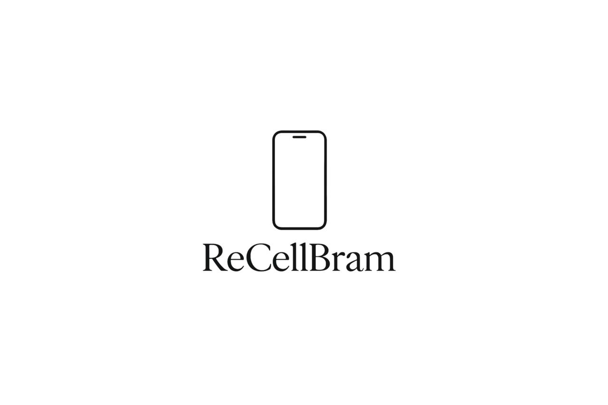
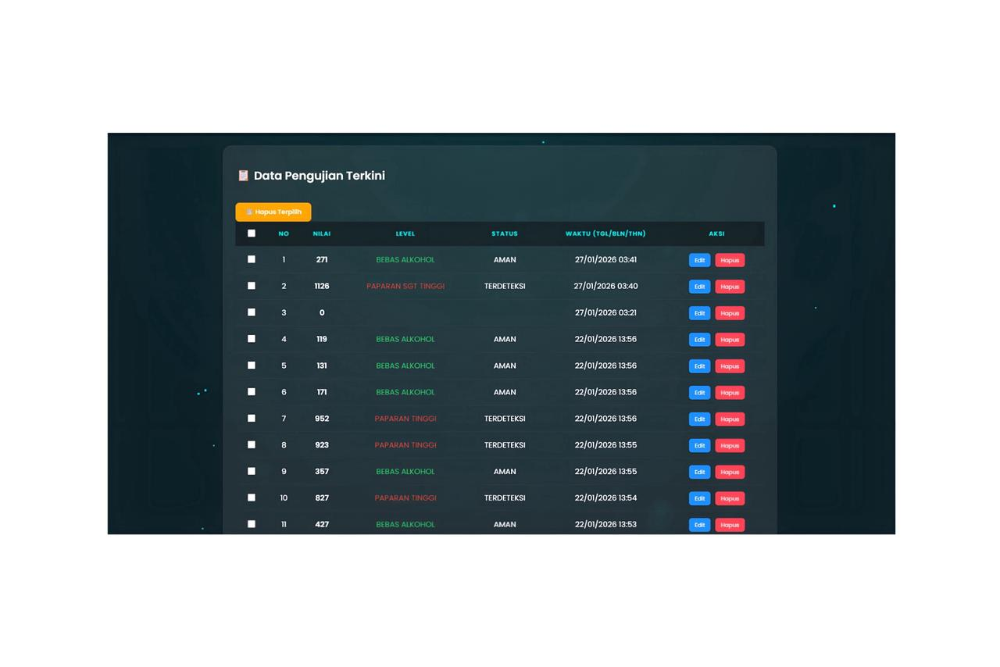
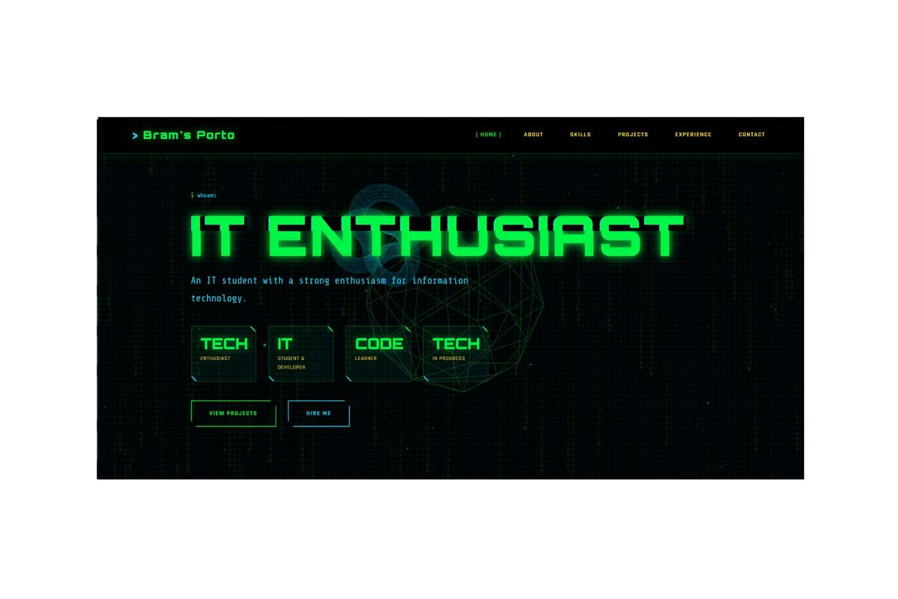
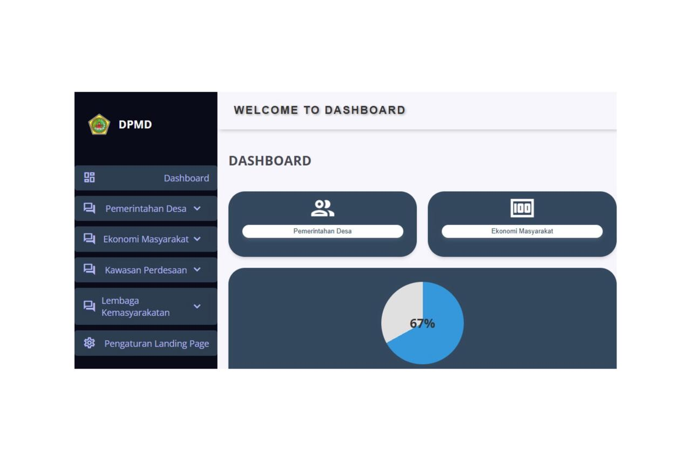

PORTFOLIO
Featured projects demonstrating expertise across various technologies and industries.

IOT SYSTEM ALCOHOL DETECTION FROM BREATH USING MQ-3 SENSORS AND ESP32
A real-time alcohol detection system based on breath analysis, utilizing the MQ-3 sensor and ESP32 microcontroller. The system accurately measures alcohol concentration from exhaled breath, processes the data, and transmits it wirelessly to a web-based platform. Measurement results are displayed in real time through an interactive website, enabling remote monitoring, data logging, and analysis for safety and control purposes.

RECELL BRAM
Recell Bram is a startup business founded from zero, offering reliable second-hand gadgets with the best quality at budget-friendly prices.
TIKTOK AFFILIATE
This project is a personal initiative that I have been actively running for almost one year as a side venture to generate additional income. Throughout its development, the project has allowed me to improve my practical skills, gain real-world experience, and manage various aspects independently, from planning and execution to daily operations.

WEBSITE FOR IOT SYSTEM ALCOHOL DETECTION
This website functions as a real-time monitoring platform for an IoT-based Alcohol Detection system. Data collected from the device is automatically stored in a database and displayed instantly on the website. The Value represents the measured alcohol concentration, while the Level indicates the alcohol consumption category, including alcohol-free, low, moderate, high, and very high. The Status shows whether the condition is safe or alcohol is detected, and the Time field records the exact date and time of each measurement for monitoring and data tracking purposes.

AI-POWERED PORTFOLIO WEBSITE
Designed as a comprehensive showcase of my professional journey, this website was built using a high-detail approach powered by Artificial Intelligence. My goal was to push the boundaries of a traditional portfolio by integrating AI-assisted design and optimization. The result is a curated, pixel-perfect digital space where technology meets intentionality, ensuring that every project and skill is presented with absolute clarity and depth.

PROTOTYPE WEBSITE FOR DPMD GIANYAR
This website was created as a prototype for the DPMD Gianyar (Department of Community and Village Empowerment of Gianyar Regency). It was developed as part of my 6-month MBKM internship program, during which I served as a Front-End Developer and contributed to the development of responsive and user-friendly interfaces.